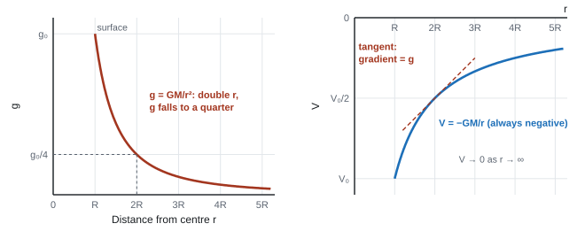

Gravitational Fields
Every mass in the universe pulls on every other mass. That pull keeps your feet on the floor, the Moon going round the Earth and the Earth going round the Sun. In this topic we describe gravity as a field, work out how strong it is at any distance from a planet, meet gravitational potential, and then use Newton's laws to explain how satellites, moons and planets orbit. Electric fields follow almost the same rules, so we finish by comparing the two.
Spec154Gravitational fields
Understand that a gravitational field (a force field) is a region in which a mass experiences a force.
What a field is
- A gravitational field is a region where a mass experiences a force. Every mass creates one, and gravity is always attractive.
- Field lines show the direction of the force on a small test mass placed there. The closer together the lines, the stronger the field.
- Radial field: around a spherical mass (a planet, a star) the lines point inwards towards the centre, and spread out with distance, so the field gets weaker. Outside the sphere it is the same as if all the mass were at the centre (a point mass).
- Uniform field: close to the Earth's surface, over a region small compared with the Earth, the lines are almost parallel and equally spaced, so g is effectively constant (9.81 N kg⁻¹). That is why mgΔh works for small height changes but not for satellites.
- "A region where a mass experiences a force."
- Comparison with electric fields: "electric fields exert forces on charges whereas gravitational fields exert forces on masses" (WPH15 Oct 2020).
Often asked as: a short definition; MCQs comparing gravitational and electric fields (both radial around a point source).
Defining the field as "where an object feels gravity": say mass and force. Drawing radial field lines pointing outwards.
Spec155Gravitational field strength g = F/m
Understand that gravitational field strength is the force per unit mass, g = F/m, and use this equation.
Definition
Gravitational field strength
- g = gravitational field strength (N kg⁻¹); F = gravitational force on the mass (N); m = mass (kg).
- g is the force per unit mass on a small test mass. It is a vector, pointing towards the mass causing the field.
- N kg⁻¹ is the same as m s⁻²: g is also the acceleration of free fall at that point.
- Weight = mg. Your mass is the same everywhere; your weight depends on the local g.
Weightlessness is a misconception
- An astronaut in orbit is still in a strong gravitational field (about 8.7 N kg⁻¹ at the height of the International Space Station). They have weight.
- They feel weightless because they and the spacecraft are in free fall together: both accelerate towards the Earth at the same rate, so there is no contact force between astronaut and floor. Gravity provides the centripetal force that keeps them in orbit (160).
Weight on Mars
g on the surface of Mars is 3.7 N kg⁻¹. Find the weight of a 70 kg astronaut there.
F = mg = 70 × 3.7 = 260 N (on Earth: 70 × 9.81 = 690 N)
- "Force per unit mass." Accept N kg⁻¹ or m s⁻² as the unit (WPH15 Oct 2025).
- Astronauts in orbit "are in a gravitational field so have weight", and "orbiting means there is a resultant (centripetal) force"; the statement that they are weightless "is not valid" (WPH15 Jan 2026).
Often asked as: calculate g on a planet or moon; explain why astronauts float; MCQ on where weight is zero (only at an infinite distance).
Saying g is negligible at orbital height, so astronauts float. Using the planet's radius instead of the distance from its centre when the object is above the surface.
Spec156Newton's law of gravitation
Use F = Gm₁m₂/r² (Newton's law of universal gravitation).
The law
Newton's law of universal gravitation
- F = the attractive force between two point masses (N); G = 6.67 × 10⁻¹¹ N m² kg⁻²; m₁, m₂ = masses (kg); r = distance between their centres (m).
- Every mass attracts every other mass. The force on each body is the same size (Newton's third law), even if one is far heavier.
- Spheres act as point masses at their centres. For a satellite at height h above a planet of radius R: r = R + h.
- It is an inverse-square law: double r and F falls to ¼; triple r and F falls to ⅑.
Earth–Moon force
ME = 5.97 × 10²⁴ kg, MMoon = 7.35 × 10²² kg, centre-to-centre distance 3.84 × 10⁸ m.
F = Gm₁m₂/r² = 6.67 × 10⁻¹¹ × 5.97 × 10²⁴ × 7.35 × 10²² / (3.84 × 10⁸)² = 1.98 × 10²⁰ N
The Earth pulls the Moon, and the Moon pulls the Earth, with this same force.
The Earth (mass \(5.97\times10^{24}\) kg) and the Moon (mass \(7.35\times10^{22}\) kg) are \(3.84\times10^8\) m apart. Calculate the gravitational force between them and the acceleration each one has because of it.
Show solution
\[ F = \frac{Gm_1m_2}{r^2} = \frac{6.67\times10^{-11}\times5.97\times10^{24}\times7.35\times10^{22}}{(3.84\times10^8)^2} = 1.98\times10^{20}\ \text{N} \]The same size of force acts on each body (Newton's third law), so use \(a = F/m\) for each:
\[ a_\text{Moon} = \frac{1.98\times10^{20}}{7.35\times10^{22}} = 2.70\times10^{-3}\ \text{m s}^{-2}, \qquad a_\text{Earth} = \frac{1.98\times10^{20}}{5.97\times10^{24}} = 3.32\times10^{-5}\ \text{m s}^{-2} \]The Moon's acceleration is the centripetal acceleration that keeps it in orbit. The Earth's is about 80 times smaller: it makes the Earth wobble slightly as the Moon goes round.
Ratio questions are quickest by scaling: if r goes up by a factor n, F goes down by n². When the answer is close to a claim, say so in numbers: "27.7, which is approximately equal to 28, so the claim is correct" scored; "27.7, so the claim is correct" didn't (WPH15 Jan 2025).
- "Use of F = GMm/r²" with r from the centre; combining with F = mg to show g r² is constant (WPH15 Oct 2020).
Often asked as: compare forces or fields at different distances; inverse-square ratios; force between galaxies; MCQ force on a mass.
Forgetting to square r. Using the height above the surface as r. Not converting km to m. Calculating the Sun's field at the Earth when its field at its own surface was asked for.
Spec157Field of a point mass: g = Gm/r²
Derive and use g = Gm/r² for the gravitational field strength due to a point mass.
Derivation
- Put a small test mass m at distance r from a point mass M. Newton's law gives the force: F = GMm/r².
- Field strength is force per unit mass: g = F/m = (GMm/r²)/m. The test mass cancels:
Radial gravitational field
Place a small test mass \(m\) a distance \(r\) from a point mass \(M\). Newton's law of gravitation gives the force on it:
\[ F = \frac{GMm}{r^2} \]Gravitational field strength is defined as force per unit mass, so divide by \(m\):
\[ g = \frac{F}{m} = \frac{GMm}{r^2}\cdot\frac{1}{m} \]The test mass cancels:
\[ \boxed{g = \frac{GM}{r^2}} \]The field depends only on the mass that creates it and how far away you are, not on what you put there. That is why a hammer and a feather dropped together on the Moon land together.
The field points towards \(M\). Outside a spherical planet or star, the field is the same as if all its mass were concentrated at its centre, so the equation works for any \(r\) from the surface outwards, with \(r\) measured from the centre.
Newton proved this "shell theorem" with some clever geometry. The proof is not in the spec; you just need to know you can treat a sphere as a point mass.
- M = mass causing the field (kg); r = distance from its centre (m). So g ∝ 1/r²; GM is constant for a given planet, so g r² = constant.
- At a planet's surface (radius R): g₀ = GM/R². Above the surface g falls: at r = 2R, g = g₀/4.
G at the height of the ISS, and the Earth's mass
(a) G = 6.67 × 10⁻¹¹ N m² kg⁻², ME = 5.97 × 10²⁴ kg, RE = 6.37 × 10⁶ m, ISS height 400 km.
r = 6.37 × 10⁶ + 0.40 × 10⁶ = 6.77 × 10⁶ m
g = GM/r² = 6.67 × 10⁻¹¹ × 5.97 × 10²⁴/(6.77 × 10⁶)² = 8.7 N kg⁻¹ (about 89% of its surface value)
(b) Mass of the Earth from g at the surface: M = gR²/G = 9.81 × (6.37 × 10⁶)²/6.67 × 10⁻¹¹ = 5.97 × 10²⁴ kg
The Earth's radius is \(6.37\times10^6\) m and \(g\) at its surface is 9.81 N kg⁻¹. (a) Calculate the mass of the Earth. (b) The International Space Station orbits 408 km above the surface. Calculate \(g\) at that height.
Show solution
(a) Rearrange \(g = GM/R^2\):
\[ M = \frac{gR^2}{G} = \frac{9.81\times(6.37\times10^6)^2}{6.67\times10^{-11}} = 5.97\times10^{24}\ \text{kg} \](b) Measure from the centre: \(r = 6.37\times10^6 + 0.408\times10^6 = 6.778\times10^6\ \text{m}\).
\[ g = \frac{GM}{r^2} = \frac{6.67\times10^{-11}\times5.97\times10^{24}}{(6.778\times10^6)^2} = 8.67\ \text{N kg}^{-1} \]That is still 88% of the value on the ground. Gravity has certainly not "switched off" up there, which matters when we explain why astronauts float.
Using the data from the first worked example, find how far from the centre of the Earth the resultant gravitational field on the Earth–Moon line is zero.
Show solution
Let the point be a distance \(x\) from the Earth, so \(d - x\) from the Moon, with \(d = 3.84\times10^8\ \text{m}\). The two field strengths are equal there:
\[ \frac{GM_E}{x^2} = \frac{GM_M}{(d-x)^2} \quad\Rightarrow\quad \frac{d-x}{x} = \sqrt{\frac{M_M}{M_E}} = \sqrt{\frac{7.35\times10^{22}}{5.97\times10^{24}}} = 0.111 \]Taking the square root of both sides keeps the algebra linear. Use the positive root: the point is between the two bodies.
\[ d = 1.111\,x \quad\Rightarrow\quad x = \frac{3.84\times10^8}{1.111} = 3.46\times10^8\ \text{m} \]That is 90% of the way to the Moon, about \(3.8\times10^7\) m from the Moon's centre. \(G\) cancelled, so you didn't need its value.
- Derivation: "use of F = GMm/r² with F = mg", "algebra to show g = GM/r²", "statement that GM is constant" (WPH15 Oct 2020).
Often asked as: show from a graph that g r² is constant (read two or three pairs and calculate g r² each time); compare g on two planets; find a planet's radius from M and g.
- Ratio method for another planet: gP/gE = (MP/ME) × (RE/RP)² (WPH15 Jan 2021).
- If you know a planet's density ρ: M = ρ × ⁴⁄₃πR³, so g = ⁴⁄₃πGρR (WPH15 Jun 2021 MCQ).
Spec158Gravitational potential in a radial field
Use Vgrav = −Gm/r for the gravitational potential in a radial field.
Definition
- The gravitational potential V at a point is the work done per unit mass to bring a small mass from infinity to that point. Unit: J kg⁻¹.
- Potential is zero at infinity. Gravity is attractive, so moving a mass in from infinity releases energy (work is done by the field). The potential is therefore negative everywhere at a finite distance.
Gravitational potential in a radial field
- M = mass causing the field (kg); r = distance from its centre (m).
- V gets less negative (rises towards 0) as r increases. Its magnitude falls as 1/r (compare g, which falls as 1/r²).

Energy changes: ΔE = mΔV
- Gravitational potential energy of a mass m at r: Egrav = mV = −GMm/r.
- Moving between two points, the change in GPE is
Change in gravitational potential energy
- Moving away from a planet, ΔV is positive, so energy must be supplied. Moving towards it, GPE falls and (with no other forces) KE rises by the same amount.
- Don't use mgΔh for large height changes: g isn't constant over thousands of kilometres.
- Equipotentials are surfaces of constant V: spheres around a planet, always perpendicular to the field lines. No work is done moving along one, which is why a circular orbit needs no energy to maintain.
Escape velocity
- To escape completely, an object must reach infinity (V = 0). Its KE at the surface must at least equal the energy needed: ½mv² = m × (0 − (−GM/R)) = GMm/R. So
Escape velocity
- It doesn't depend on the mass of the object. For the Earth it is about 11 km s⁻¹.
- If the escape velocity at a body's surface would be greater than c, not even light can escape: a black hole. Setting vesc = c gives the radius R = 2GM/c².
Lifting a satellite into orbit
How much energy is needed to raise a 1200 kg satellite from the Earth's surface (R = 6.37 × 10⁶ m) to a height of 400 km? GME = 6.67 × 10⁻¹¹ × 5.97 × 10²⁴ = 3.98 × 10¹⁴ N m² kg⁻¹.
V at surface = −GM/R = −3.98 × 10¹⁴/6.37 × 10⁶ = −6.251 × 10⁷ J kg⁻¹
V at orbit = −GM/r = −3.98 × 10¹⁴/6.77 × 10⁶ = −5.882 × 10⁷ J kg⁻¹
ΔV = −5.882 × 10⁷ − (−6.251 × 10⁷) = 3.69 × 10⁶ J kg⁻¹
ΔE = mΔV = 1200 × 3.69 × 10⁶ = 4.4 × 10⁹ J
(mgΔh would give 4.7 × 10⁹ J: too big, because g is less than 9.81 N kg⁻¹ above the surface.)
Escape velocity and a black hole
Escape velocity from the Earth: v = √(2GM/R) = √(2 × 3.98 × 10¹⁴/6.37 × 10⁶) = 1.1 × 10⁴ m s⁻¹
Radius a body with the Sun's mass (1.99 × 10³⁰ kg) would need to be a black hole:
R = 2GM/c² = 2 × 6.67 × 10⁻¹¹ × 1.99 × 10³⁰/(3.00 × 10⁸)² = 2.9 × 10³ m (under 3 km)
A 1000 kg satellite is to be placed in a circular orbit 400 km above the Earth (radius \(6.37\times10^6\) m, mass \(5.97\times10^{24}\) kg). (a) Calculate the increase in its gravitational potential energy. (b) Compare your answer with \(mg\Delta h\). (c) Calculate the kinetic energy it needs in orbit.
Show solution
(a) \(GM = 6.67\times10^{-11}\times5.97\times10^{24} = 3.982\times10^{14}\ \text{N m}^2\,\text{kg}^{-1}\). Find the potential at each radius:
\[ V_1 = -\frac{3.982\times10^{14}}{6.37\times10^6} = -6.251\times10^7\ \text{J kg}^{-1}, \qquad V_2 = -\frac{3.982\times10^{14}}{6.77\times10^6} = -5.882\times10^7\ \text{J kg}^{-1} \] \[ \Delta E = m\,\Delta V = 1000\times(-5.882\times10^7 - (-6.251\times10^7)) = 3.69\times10^9\ \text{J} \](b) \(mg\Delta h = 1000\times9.81\times4.0\times10^5 = 3.92\times10^9\ \text{J}\). This is about 6% too big, because \(g\) gets smaller as the satellite rises (it is 8.69 N kg⁻¹ at 400 km).
(c) In a circular orbit \(v^2 = GM/r\) (see the orbits section below), so
\[ E_k = \tfrac{1}{2}mv^2 = \frac{GMm}{2r} = \frac{3.98\times10^{14}\times1000}{2\times6.77\times10^6} = 2.94\times10^{10}\ \text{J} \]Eight times the potential energy. Getting up to orbit is the easy part; getting fast enough to stay there is what needs the huge rockets.
- "Use of V = −GM/r" at each radius, r = R + h; "use of ΔE = mΔV".
- "Do not credit use of ΔEgrav = mgΔh, as g is not constant" (WPH15 Jun 2021, Jan 2021, Jun 2025).
- "Do not award MP3 if radius of satellite is added to radius of Earth" (WPH15 Jun 2025).
- In ΔE = mΔV, either mass can be the M in V, but the multiplier m must be the other mass (WPH15 Oct 2023).
- Escape-speed derivation: "GMm/r equated to ½mv²"; "do not credit mgΔh" (WPH15 Oct 2025).
Often asked as: potential at a height; energy to move a satellite between orbits; KE gained falling inwards; Earth's mass from a V against 1/r graph; derive and use escape velocity; black-hole radius.
Using mgΔh with g = 9.81 N kg⁻¹. Forgetting to add the height to the radius, or not converting km to m. Using g instead of G. Confusing potential (J kg⁻¹) with potential energy (J), or potential with field strength. Missing the unit. Saying V "increases" when you mean its magnitude.
- Escape velocity v = √(2GM/R) and the black-hole radius (WPH15 Jan 2023, Oct 2025).
- A gas has a range of molecular speeds, so some molecules exceed the escape speed even when the r.m.s. speed doesn't, and the atmosphere slowly leaks away (WPH15 Jan 2023, Jan 2026).
- Reading M from a graph of V against 1/r (gradient = −GM) (WPH15 Jan 2025).
Spec159Comparing gravitational and electric fields
Compare electric fields with gravitational fields.
| Gravitational | Electric | |
|---|---|---|
| Acts on | mass | charge |
| Field strength | g = F/m (N kg⁻¹) | E = F/Q (N C⁻¹) |
| Force between point sources | F = Gm₁m₂/r² | F = kQ₁Q₂/r², k = 1/4πε₀ |
| Field of a point source | g = GM/r² | E = kQ/r² |
| Potential of a point source | V = −GM/r | V = kQ/r |
| Attract or repel? | always attractive | like charges repel, unlike attract |
| Sign of potential | always negative | positive near + charge, negative near − charge |
| Uniform field | near a planet's surface | between parallel charged plates |
| Strength | very weak | very strong |
Similarities: both are inverse-square laws for point sources; both have infinite range; both give radial fields around a point/spherical source with spherical equipotentials; both have uniform fields with parallel, equally spaced lines; in both, potential ∝ 1/r and field strength ∝ 1/r².
Electric v gravitational force between two protons
FE/FG = (ke²/r²)/(Gmp²/r²) = ke²/Gmp² (r cancels)
= 8.99 × 10⁹ × (1.60 × 10⁻¹⁹)² / (6.67 × 10⁻¹¹ × (1.67 × 10⁻²⁷)²) = 1.2 × 10³⁶
Gravity is negligible between particles; it dominates for planets and stars because bulk matter is electrically neutral overall.
In a hydrogen atom an electron and a proton attract each other electrically and gravitationally. Show that the electric force is about \(10^{39}\) times bigger. (\(e = 1.60\times10^{-19}\) C, \(m_p = 1.67\times10^{-27}\) kg, \(m_e = 9.11\times10^{-31}\) kg)
Show solution
Both forces have \(r^2\) underneath, so it cancels when you divide one by the other:
\[ \frac{F_E}{F_G} = \frac{e^2/4\pi\varepsilon_0 r^2}{Gm_pm_e/r^2} = \frac{8.99\times10^9\times(1.60\times10^{-19})^2}{6.67\times10^{-11}\times1.67\times10^{-27}\times9.11\times10^{-31}} = 2.27\times10^{39} \]This ratio doesn't depend on how far apart they are, because both are inverse-square laws.
- Similarity: "both obey an inverse square law (for point masses / charges)" or "both have an infinite range".
- Difference: "electric fields can be attractive or repulsive, whereas gravitational fields can only be attractive", or "electric fields act on charges whereas gravitational fields act on masses" (WPH15 Oct 2020).
Often asked as: one similarity and one difference (2 marks); MCQs on radial fields and 1/r² variation.
Giving a "difference" that is really the same idea twice, or a similarity that is false (e.g. "both can repel").
Spec160Orbital motion
Apply Newton's laws of motion and his law of gravitation to orbits.
Gravity provides the centripetal force
- In a circular orbit the only force on a satellite is gravity, directed towards the centre of the planet. It is perpendicular to the velocity, so it changes the direction but not the speed. The resultant force is the centripetal force:
Gravity provides the centripetal force
- The satellite's mass m cancels, so the orbit doesn't depend on it.
Orbital speed and period
- From GMm/r² = mv²/r:
Orbital speed
For a satellite of mass \(m\) in a circular orbit of radius \(r\) round a planet of mass \(M\), gravity provides the centripetal force:
\[ \frac{GMm}{r^2} = \frac{mv^2}{r} \]Cancel \(m\) and one factor of \(r\):
\[ v^2 = \frac{GM}{r} \]Take the square root:
\[ \boxed{v = \sqrt{\frac{GM}{r}}} \]The satellite's mass has cancelled, so a spanner and a space station in the same orbit move at the same speed. A bigger \(r\) means a smaller \(v\): higher orbits are slower.
- Using ω = 2π/T in GMm/r² = mω²r:
Period and radius
Start from \(v^2 = GM/r\) and substitute \(v = 2\pi r/T\):
\[ \frac{4\pi^2 r^2}{T^2} = \frac{GM}{r} \]Rearrange to make \(T^2\) the subject:
\[ \boxed{T^2 = \frac{4\pi^2}{GM}\,r^3} \]Kepler discovered \(T^2 \propto r^3\) from planetary observations in 1619 ("Kepler's third law"), almost 70 years before Newton's law of gravitation explained it.
So for everything orbiting the same central body, a graph of \(T^2\) against \(r^3\) is a straight line through the origin with
\[ \text{gradient} = \frac{4\pi^2}{GM} \quad\Rightarrow\quad M = \frac{4\pi^2}{G\times\text{gradient}} \]- Since G, M and π are constants, T² ∝ r³ (Kepler's third law). A lower orbit is faster and has a shorter period.
- For two planets around the same star: (T₁/T₂)² = (r₁/r₂)³.
- Shortcut: in orbit the centripetal acceleration equals the local field strength, ω²r = g.
Geostationary orbits
- A geostationary satellite stays above the same point on the equator: it orbits above the equator, in the same direction as the Earth rotates, with period 24 h. Used for communications and TV (fixed dishes).
- A polar orbit passes over (or near) the poles in a lower orbit; as the Earth turns beneath it, it scans the whole surface. Lower height gives better resolution (weather, mapping), but it is only over a given place briefly.
Geostationary height
T = 24 h = 86 400 s; GME = 3.98 × 10¹⁴ N m² kg⁻²; RE = 6.37 × 10⁶ m.
r³ = GMT²/4π² = 3.98 × 10¹⁴ × 86 400²/(4π²) = 7.53 × 10²² m³
r = 4.22 × 10⁷ m
Height = r − RE = 4.22 × 10⁷ − 0.64 × 10⁷ = 3.6 × 10⁷ m (about 36 000 km)
Period of the ISS
r = 6.77 × 10⁶ m.
T = 2π√(r³/GM) = 2π√((6.77 × 10⁶)³/3.98 × 10¹⁴) = 5.55 × 10³ s = 92 minutes
v = √(GM/r) = √(3.98 × 10¹⁴/6.77 × 10⁶) = 7.7 × 10³ m s⁻¹, about 16 orbits a day.
Io orbits Jupiter with a period of 1.77 days at a radius of \(4.22\times10^8\) m. Calculate the mass of Jupiter.
Show solution
Convert the period to seconds: \(T = 1.77\times24\times3600 = 1.529\times10^5\ \text{s}\). Rearrange \(T^2 = 4\pi^2r^3/GM\):
\[ M = \frac{4\pi^2 r^3}{GT^2} = \frac{4\pi^2\times(4.22\times10^8)^3}{6.67\times10^{-11}\times(1.529\times10^5)^2} = 1.90\times10^{27}\ \text{kg} \]About 320 times the mass of the Earth.
Calculate the height above the Earth's surface of a geostationary orbit, and the speed of a satellite in it. Mass of Earth \(= 5.97\times10^{24}\) kg, radius of Earth \(= 6.37\times10^6\) m.
Show solution
\(T = 24\times3600 = 86\,400\ \text{s}\). Rearrange \(T^2 = 4\pi^2 r^3/GM\) for \(r\):
\[ r^3 = \frac{GMT^2}{4\pi^2} = \frac{6.67\times10^{-11}\times5.97\times10^{24}\times(86\,400)^2}{4\pi^2} = 7.53\times10^{22}\ \text{m}^3 \] \[ r = \sqrt[3]{7.53\times10^{22}} = 4.22\times10^7\ \text{m} \]This is measured from the centre, so subtract the Earth's radius:
\[ h = 4.22\times10^7 - 6.37\times10^6 = 3.59\times10^7\ \text{m} \quad(\text{about } 36\,000\ \text{km}) \] \[ v = \frac{2\pi r}{T} = \frac{2\pi\times4.22\times10^7}{86\,400} = 3.07\times10^3\ \text{m s}^{-1} \]Set the equation up in words first: "gravitational force provides the centripetal force". Write GMm/r² = mω²r, then substitute ω = 2π/T. Distances are always from the centre of the body being orbited.
- "Equate F = GMm/r² with F = mω²r" (separate mark); "accept F = mv²/r with v = 2πr/T".
- Deriving T² ∝ r³: "statement that G, M (and π) are constants, so T² ∝ r³" (WPH15 Jun 2022: often missing).
- Lower orbit: "F is greater, and F = mω²r means T must decrease", or "T² = 4π²r³/GM so T ∝ √(r³)" (WPH15 Jun 2021).
- Geostationary: "T = 24 h", r = (GM/ω²)⅓, "height = r minus the radius of the Earth" (WPH15 Oct 2025).
Often asked as: orbital period or orbits per day compared with a claim; derive T² ∝ r³; period of a planet from the ratio method; geostationary height; why a lower orbit has a shorter period; effect of the Sun losing mass (smaller force, r increases, T increases).
Adding the wrong radius (the satellite's or Pluto's) or forgetting to add the planet's radius. Not squaring 2π. Comparing a period in seconds with a claim in hours or days without converting. Writing an advantage when a disadvantage was asked.
- Energy of an orbiting satellite: KE = GMm/2r, GPE = −GMm/r, total = −GMm/2r. If its orbit drops, GPE falls and KE rises: it speeds up (WPH15 Jan 2024 MCQ).
- Air drag on a low satellite does work, raising the temperature of the satellite and the air around it (WPH15 Jan 2021).
- Geostationary v polar orbits: advantages and disadvantages (WPH15 Oct 2021). Time between two planets' alignments (synodic period) from their relative angular speed (WPH15 Jun 2022).
Quick checks
The gravitational field strength at the Earth's surface is 9.81 N kg⁻¹. What is it at a height above the surface equal to the Earth's radius?
The distance from the centre doubles (from \(R\) to \(2R\)), so \(g\) falls by a factor of \(2^2 = 4\): \(9.81/4 = 2.45\ \text{N kg}^{-1}\). 4.91 forgets the square; 1.09 uses \(3R\).
A satellite is moved from a low circular orbit to a higher circular orbit around the Earth. What happens to its speed and its period?
\(v = \sqrt{GM/r}\), so a bigger \(r\) means a lower speed. It also has further to go, so \(T = 2\pi r/v\) increases on both counts (\(T^2 \propto r^3\)).
Why do astronauts on the International Space Station feel weightless?
\(g\) at the ISS is about 8.7 N kg⁻¹, nearly the surface value. Everything on board is falling round the Earth together, so nothing presses on anything else.
At a point in the Earth's field the gravitational potential is −50 MJ kg⁻¹. What is the minimum energy needed to move a 2.0 kg mass from there to infinity?
The potential at infinity is zero, so \(\Delta V = 0 - (-50) = +50\ \text{MJ kg}^{-1}\). Work done \(= m\Delta V = 2.0\times50 = 100\ \text{MJ}\). You have to put energy in, so it is positive.
At the neutral point between the Earth and the Moon, which statement is correct?
Field strengths are vectors and cancel there. Potentials are scalars and simply add: both are negative, so the total is negative. The potential has a maximum at that point, so its gradient (the field) is zero.
Moon X orbits a planet at four times the orbital radius of moon Y. How many times longer is the period of X than the period of Y?
\(T^2 \propto r^3\), so \(T \propto r^{3/2}\). Multiplying \(r\) by 4 multiplies \(T\) by \(4^{3/2} = \sqrt{64} = 8\).